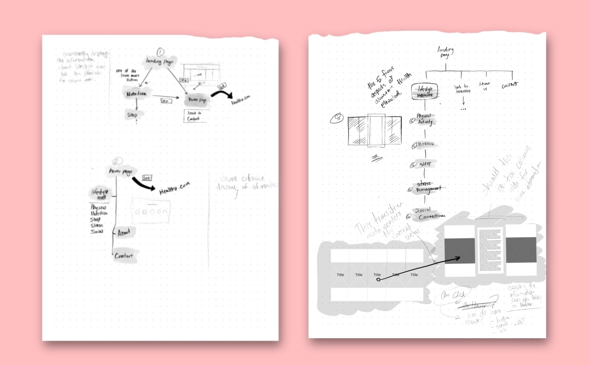
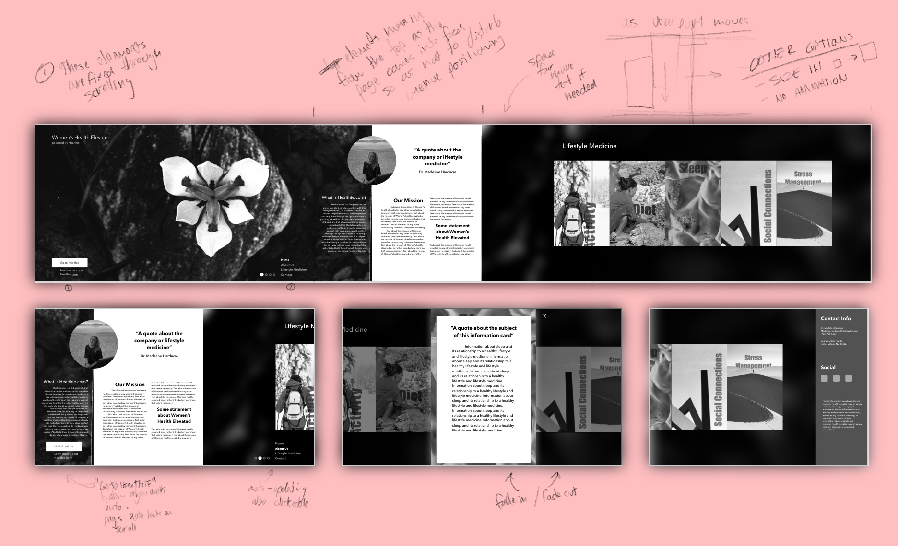
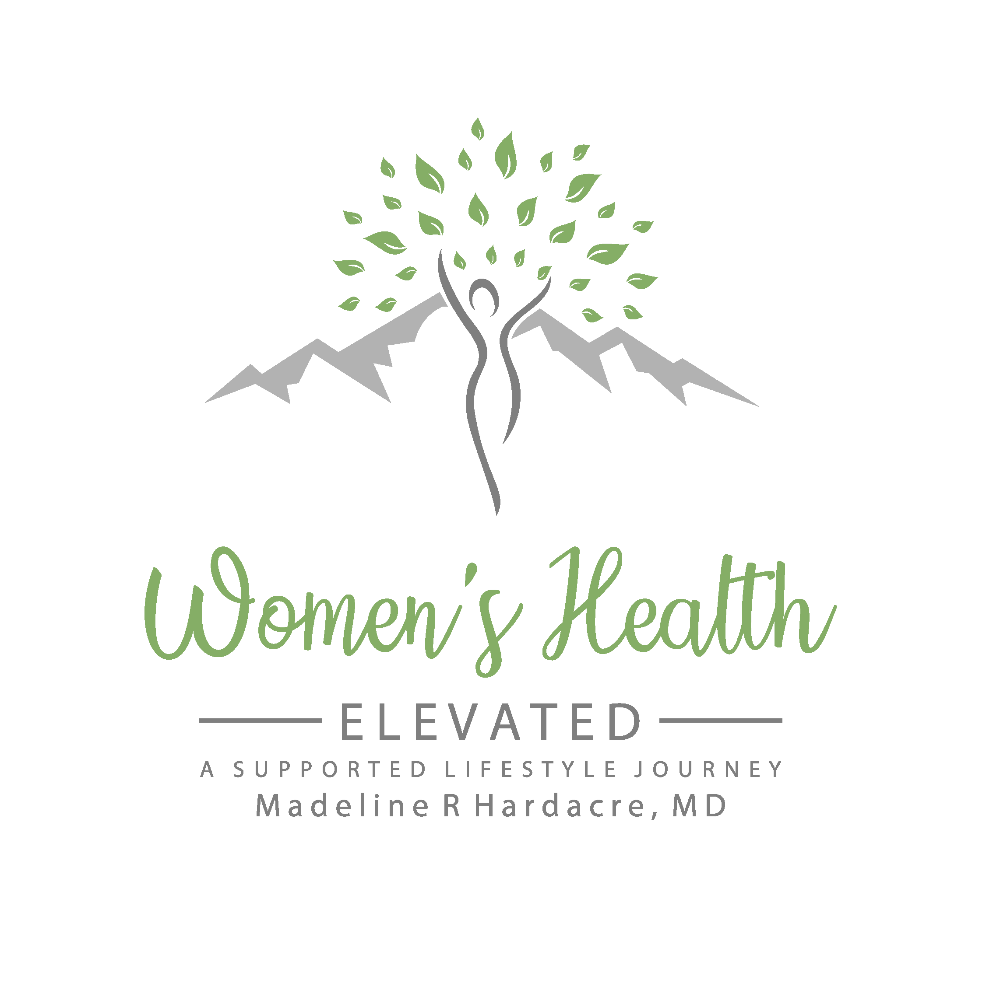

The project for Women's Health Elevated started as a Web UX commission and evolved partially into an Identity Design project. As a new company, Women's Health Elevated did not yet have a strong sense of the imagery, colors, and language to be used in the project. Defining these conceptual elements was crucial before continuing to create the interface that would represent the company.
Research for this project included familiarizing myself with the field of lifestyle medicine and particularly the kinds of motifs that appear in interfaces appealing to women interested in health.
The first interview with the client gave me some surface level information about where they saw their company being positioned in the field of lifestyle medicine and the information that they felt was important to their clients. This brief also helped me identify the goals of the site: the interface was meant to direct potential clients to a third-party site.
Initial sketches of the flow of the site
During the first creative brief the client mentioned that at the core of her practice are the pillars of lifestyle medicine. These pillars include Physical Activity, Nutrition, Sleep, Stress Management, and Social Connection. I wanted to find some way to incorporate these ideals into the site.
Identifying how the pillars of lifestyle medicine would be communicated to the users
The first draft of the interface and interactions
Working for a little while on the design of the site raised some additional questions that weren't addressed in the initial brief. So, I sat back down with the client and we talked more about the emotional appeal her company was attempting to make. We narrowed in on a new client base: "Middle aged women who are looking for a non-traditional means of improving their health." The word non-traditional got me excited, it meant I could play beyond the existing motifs in women's lifestyle medicine. A few other words that came up numerous times throughout our conversation were inspiration and natural. I decided to make these themes the backbones of the new site design. I also used the logo for Women's Health Elevated to gather some information about the company:
From the logo I identified a color scheme that differed from traditional women's health focusd designs. It was more about earth tones and natural colors and less about the feminine aspect of women's health. The logo also helped me identify the imagery that was important to the client.
Based on the second creative brief, I felt I could use the themes of the company and pillars of lifestyle medicine to create an identity for Women's Health Elevated that would produce a more coherent and powerful site than the first draft. I created five messages that I felt would resonate with the users and be informative of the five pillars of lifestyle medicine: Live Colorfully, Live Powerfully, Live Gratefully, Live Restfully, Live fully.
Using the newly identified themes to organize the content and work on colors and typefaces.